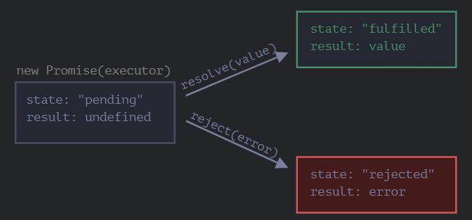

*Массив это упорядочный объект
Задаются 3 способами:
Свойства:
Декоратор(Обертка в кеш) это обёртка вокруг функции, которая изменяет поведение последней.:
С одним аргументом
function cachingDecorator(func) { let cache = new Map(); return function(x) { if (cache.has(x)) { // если кеш содержит такой x, return cache.get(x); // читаем из него результат } let result = func(x); // иначе, вызываем функцию cache.set(x, result); // и кешируем (запоминаем) результат return result; }; }
С несколькими
function cachingDecorator(func, hash) { let cache = new Map(); return function() { let key = hash(arguments); // (*) if (cache.has(key)) { return cache.get(key); } let result = func.call(this, ...arguments); // (**) cache.set(key, result); return result; }; }
Задаются так:
let user = {
name:'Some',
age: 15
}
Для обращения к параметру объекта user.name или user[name]
Функции, которые находятся в свойствах объекта, называются «методами».
Методы могут ссылаться на объект через this.
Проверка наличия - ?
Такие функции используются для создания объектов
Имя функции-конструктора должно начинаться с большой буквы.
Функция-конструктор должна выполняться только с помощью оператора "new".
JSON (JavaScript Object Notation) – это формат данных, который имеет собственный независимый стандарт и библиотеки для большинства языков программирования.
let promise = new Promise(function(resolve, reject) {
// функция-исполнитель (executor)
// "певец"
});
Параметры
Внутренние свойства
